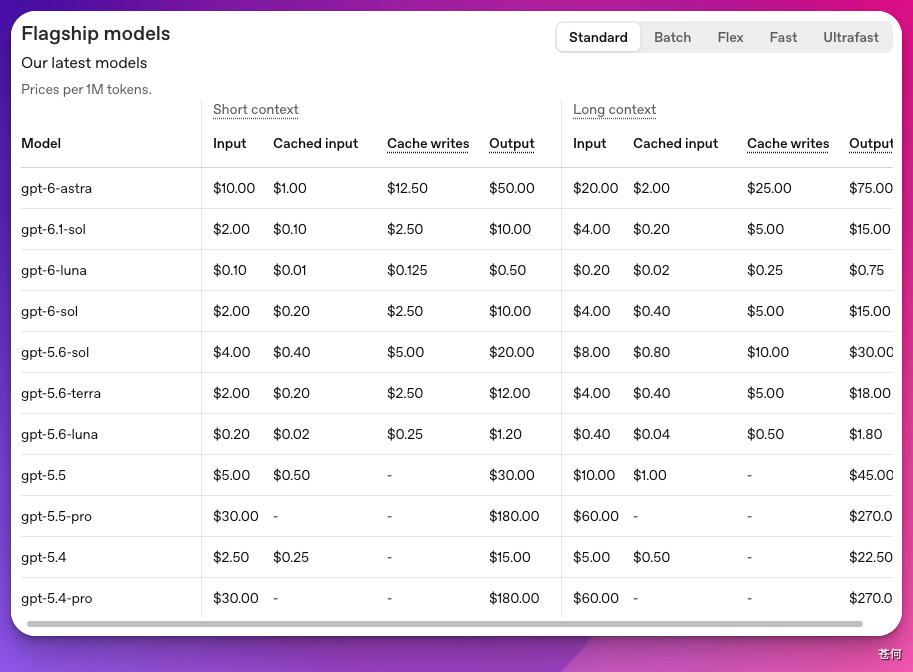

ChatGPT 中的 Codex 任务、Codex App 的使用额度、OpenAI API 的 token 价格、第三方 API 中转的账单……这些计费方式并不相同。
通过本文，你可以了解它们的区别、计算方式，以及实际使用中节省成本的方法。
简单理解：
- ChatGPT / Codex 产品侧看计划额度和 credits。
- API 侧看 token。
其中，ChatGPT Work 与 Codex 共享同一套使用额度、credits 和使用限制；Codex 的本地消息与云端任务也会共同消耗计划额度。
具体额度会随计划、模型和任务复杂度变化，请以 官方定价说明 和使用情况面板为准。
API token 价格与这些订阅额度分开计算，不能用 API 单价估算计划内可完成的任务数量。
Token 是什么#
Token 是模型读写文本时的基本“小块”。它不等于字数，也不等于字符数，而是模型内部用来切分语义的基本单位。
- 英文里，一个 token 可能是一个短词，也可能只是词的一部分。
- 中文里，一个汉字、一个标点、一个空格、一段英文片段，都会影响 token 数。
代码、JSON、Markdown 表格、长路径、日志和依赖锁文件通常很占 token。图片、音频、工具调用，以及推理模型使用的内部思考，也会以各自的方式计入用量。
不同模型使用的 tokenizer 和切分策略可能不同。同一句话，比如“我是一只猫”，在不同模型里算出的 token 数可能不一样。通常中文模型对中文的分词更友好。
上下文#
每次与 Codex 交互时，之前的聊天记录（称为“上下文”）都会一起发送到服务端。
上下文不一定等于完整聊天记录，内容过长时，较早的信息可能被压缩、截断或替换为更紧凑的状态。
举个例子：
- 之前已有 5000 token。
- 本次对话共产生 1000 token。
- 下一次对话将发送 5000 + 1000 = 6000 token 的上下文。
- 也就是说，上下文是逐轮累积的。如果每轮都新增 1000 token，5 轮后累计消耗的 token 就是 1000 + 2000 + 3000 + 4000 + 5000 = 15000 token。
这里有一个反直觉的地方：聊得越多，用量增长会不会越来越夸张？实际增长还会受到压缩、截断和上下文管理的影响；与此同时，服务端也会通过 prompt caching 降低重复处理稳定前缀的成本。
Prompt caching 是什么#
Prompt caching 可以理解为：模型服务端会记住你最近用过的一段长前缀。当后续请求的开头部分和之前足够相似时，这部分输入会按 cached input tokens 计费。缓存输入通常比普通输入便宜，响应也可能更快。
缓存并不是从任意长度开始生效。根据最新规则，GPT-5.6 及更新模型的提示词前缀至少需要达到 1,024 token，才有资格进入缓存；更早模型的最低长度会随模型和请求设置而变化。达到最低长度也不代表一定命中，后续请求仍需满足前缀匹配及缓存有效期等条件。具体规则参见官方 Prompt Caching。

| 类型 | 含义 | 费用 |
|---|---|---|
| Input tokens | 输入 token。发给模型的内容，包括你的问题、系统提示、历史消息、文件片段、工具定义等 | 中 |
| Output tokens | 输出 token。模型最终生成的内容 | 高 |
| Cached input tokens | 缓存命中 token。命中 prompt caching 的输入 token | 低 |
缓存命中时，输入成本通常会降低，但需要区分两套计费体系：
- API 计费：按照所用模型的 input、cached input、cache write 和 output 单价计算。以 GPT-5.6 及更新模型为例，缓存写入按普通输入价格的 1.25 倍计费；缓存读取在多数模型上为普通输入价格的 0.1 倍，GPT-6.1 Sol 为 0.05 倍。不同模型可能采用不同价格和缓存规则，应以 Prompt Caching 与 API Pricing 页面为准。
- Codex credits 计费：按照 Codex 定价表中各模型的 input、cached input 和 output credits 费率计算，目前没有单独的 cache-write charge。计划内额度、购买的 credits 和 API 账单相互独立，不能直接用 API 美元单价换算计划内任务数量，具体以 Codex 定价 为准。
两套计费方式虽然不同，但能否命中缓存取决于同一件事：后续请求能否复用一段足够长、内容一致的前缀。
容易命中的内容：
- 固定的系统提示、开发者提示和项目规则
- 一直不变的长背景材料，比如 API 文档摘要、协议说明、代码规范
- 稳定的工具定义、函数 schema、结构化输出 schema
- 同一项目里反复出现的文件上下文或说明模板
不容易命中的内容：
- 每次都放在最前面的临时问题
- 每轮都变化的时间戳、随机 ID、日志尾部、搜索结果
- 顺序不断变化的文件列表
- 一会儿中文、一会儿英文、一会儿改格式的同一段规则
大部分情况下 Codex 会自动使用缓存。命中缓存的输入 token 会被单独标记出来，价格也低很多。根据经验，Codex 的缓存命中率通常在 80%–90% 之间。
GPT-5.6 及更新模型还支持显式缓存断点。用户通常不需要手动控制；在自己开发 API 应用、并且能够明确区分稳定前缀和动态后缀时，再考虑使用显式模式或缓存预热。
通俗理解：启用缓存后，每次对话的费用大致等于本次输入 token 加输出 token，再加上之前上下文的缓存 token。由于缓存价格通常只有普通输入 token 的十分之一左右，只有当上下文非常长时，缓存 token 的费用才值得特别关注。
什么会作为上下文？#
更准确地说，Codex 每次请求模型时，发送的不是单纯的“聊天记录”，而是一组整理过的上下文。它来自当前对话、项目规则、工具定义、文件内容、命令输出，以及 Codex 在任务中保留下来的工作记录。
根据 Codex CLI 源码和官方文档，可以把上下文来源分成几类：
| 来源 | 什么时候进入上下文 | 加载和保留细节 |
|---|---|---|
| 当前消息和历史对话 | 每轮都会带上当前线程中仍被保留的内容 | 每次请求都会加入上下文。上下文太长时，Codex 会把较早内容 compact 成摘要 |
AGENTS.md |
会话开始时从全局、项目根到当前目录发现并拼接 | 发现到的规则会进入线程上下文，并按目录层级生效。具体刷新行为可能随 Codex 版本和运行环境变化 |
| Skills 列表 | 会话可见的 skill 元数据会进入初始上下文 | 每次请求都会带上可见 skill 的 name、description 和路径。不会一开始就读取完整 SKILL.md |
| 被调用的 Skill | Codex 判断任务匹配某个 skill，或用户显式 $skill 调用时 |
触发后才读取完整 SKILL.md，读取后会进入当前线程上下文。references/、脚本、素材不会自动全读，用到时再读 |
| MCP 工具 | MCP server 启用并初始化后 | 可用工具的说明和参数 schema 可能进入上下文；使用 tool search 或延迟加载时，可以先只暴露较少的工具信息。工具返回的数据只在调用后进入上下文 |
| 文件内容 | Codex 读取文件、搜索代码、打开片段之后 | 仓库不会整包进入上下文。只有被引用、搜索、读取，或被 IDE 自动带入的文件内容会进入当前线程 |
| 终端和工具输出 | shell、测试、搜索、MCP 调用等工具执行之后 | 命令输出会进入后续上下文，但受 tool_output_token_limit 限制；长日志会被截断或只保留片段 |
| IDE 上下文 | 使用 IDE 插件发起任务时 | IDE 会自动加入打开文件列表和当前选区。CLI 默认不会自动加入这些 IDE 信息 |
| Subagents | 用户明确要求并行 agent，或运行环境启用多 agent 编排时 | 每个子 agent 都有自己的上下文、模型调用和工具调用。主 agent 负责协调并组合结果，不会自动把所有子线程上下文完整合并进来 |
最佳实践#
如果想节约 token 支出、优化账单，可以从以下几个方面入手：
- 减少 MCP 的使用。MCP 加载的上下文量很大。现如今更推荐通过 CLI + Skills 的方式替代。
- 简化你的
AGENTS.md。只保留必要信息，减少“认真分析”“充分思考”这类不能改变模型行为的模糊语句，改为给出明确的工作流程、完成指标和边界。 - 精简 Skills。你可能有囤积 Skills 的习惯。虽然它们加载的上下文很少，但仍可能误导模型、降低工作效率。只保留真正会用到的 Skills。
- 必要时刻使用 SubAgent。SubAgent 会提高Token的消耗。可以询问AI当前任务是否复杂到需要启用这一功能。
- 保持上述这些会影响上下文的工具的稳定。即尽可能少地修改它们，确保这些频繁加入上下文的内容能够被服务端命中缓存，从而提高缓存命中率，减少开支。
下一步#
下一步：AGENTS.md。